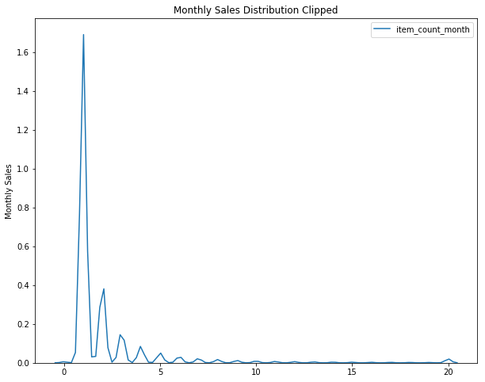

References
Bibliography
- [B1] 1. Albon C. Machine learning with Python cookbook: practical solutions from preprocessing to deep learning. First edition. Beijing Boston Farnham: O’Reilly; 2018. 349 p.
This is some stuff about what we are trying to predict. I realized that the description of the competition says that we are trying to predict the number of items sold per shop for the next month after the data, but I never said what that month is, so I'm making this just to put it somewhere.
import warnings
warnings.filterwarnings("ignore", message="numpy.dtype size changed")
warnings.filterwarnings("ignore", message="numpy.ufunc size changed")
import pandas
import matplotlib.pyplot as pyplot
import seaborn
from kaggler.helpers.build_training_data import Pickles
from kaggler.helpers.helpers import (
DataKeys,
Helpers,
)
% matplotlib inline
seaborn.set_style("whitegrid")
x_train = Helpers.unpickle(Pickles.x_train)
y_train = Helpers.unpickle(Pickles.y_train)
x_test = Helpers.unpickle(Pickles.x_test)
Although it seem unlikely, it's possible that there are months in either the test or training set that aren't shared, so I'm going to concatenate them.
concatenated = pandas.concat([x_train, x_test], axis="rows")
assert concatenated.shape == (len(x_train) + len(x_test), len(x_train.columns))
Unfortunately I got rid of the days, which are required by the to_datetime function provided by pandas, so I'm going to construct a new date column with a day of 1 for each date.
DataKeys.date = "Date"
DataKeys.datetime = "Date Time"
concatenated[DataKeys.date] = "01-" + concatenated.month + '-' + concatenated.year
concatenated[DataKeys.datetime] = pandas.to_datetime(
concatenated[DataKeys.date], format="%d-%m-%Y")
Helpers.print_head(concatenated)
| date_block_num | shop_id | item_id | item_price | item_category_id | month | year | Date | Date Time |
|---|---|---|---|---|---|---|---|---|
| 11 | 15 | 1324 | 499 | 55 | 12 | 2013 | 01-12-2013 | 2013-12-01 00:00:00 |
| 18 | 31 | 19981 | 499 | 43 | 07 | 2014 | 01-07-2014 | 2014-07-01 00:00:00 |
| 32 | 28 | 7934 | 398 | 7 | 09 | 2015 | 01-09-2015 | 2015-09-01 00:00:00 |
| 12 | 43 | 13518 | 1499 | 19 | 01 | 2014 | 01-01-2014 | 2014-01-01 00:00:00 |
| 28 | 25 | 19927 | 329 | 57 | 05 | 2015 | 01-05-2015 | 2015-05-01 00:00:00 |
print(concatenated[DataKeys.datetime].max())
So the last month in the data-set is October 2015, and we want to predict what the counts will be for November 2015.
import warnings
warnings.filterwarnings("ignore", message="numpy.dtype size changed")
warnings.filterwarnings("ignore", message="numpy.ufunc size changed")
import matplotlib.pyplot as pyplot
import numpy
import seaborn
%matplotlib inline
seaborn.set_style("whitegrid")
from kaggler.helpers.build_training_data import Pickles
from kaggler.helpers.helpers import (
DataKeys,
Helpers,
)
x_train = Helpers.unpickle(Pickles.x_train)
y_train = Helpers.unpickle(Pickles.y_train)
DataKeys.target = "Month Count"
x_train[DataKeys.target] = y_train.values
Helpers.print_head(x_train)
| date_block_num | shop_id | item_id | item_price | item_category_id | month | year | Month Count |
|---|---|---|---|---|---|---|---|
| 11 | 15 | 1324 | 499 | 55 | 12 | 2013 | 1 |
| 18 | 31 | 19981 | 499 | 43 | 07 | 2014 | 2 |
| 32 | 28 | 7934 | 398 | 7 | 09 | 2015 | 1 |
| 12 | 43 | 13518 | 1499 | 19 | 01 | 2014 | 1 |
| 28 | 25 | 19927 | 329 | 57 | 05 | 2015 | 2 |
def make_figure_and_axis(x_label, y_label, title, figsize=(10, 8)):
"""make a matplotlib figure
Args:
x_label (str): label for the x-axis
y_label (str): label for the y-axis
title (str): title for the plot
figsize: tuple of width, height
Returns:
tuple: figure, axis
"""
figure = pyplot.figure(figsize=figsize)
axe = figure.gca()
axe.set_xlabel(x_label)
axe.set_ylabel(y_label)
axe.set_title(title)
return figure, axe
figure, axis = make_figure_and_axis("Date Block", "Count", "Date-Block Counts")
grid = seaborn.catplot(ax=axis, x=DataKeys.date_block, kind="count", data=x_train)
The counts represent the number of shop-product pairs per-month, which isn't really what we want. We want the count per-product per month. As an intermediary step, why don't we look at the total count as it changes over time.
date_group = x_train.groupby(DataKeys.date_block)
summed = date_group.sum()
summed = summed.reset_index()
figure, axis = make_figure_and_axis("Date Block", "Monthly Count",
"Total Items Sold Per Month")
grid = seaborn.relplot(x=DataKeys.date_block, y=DataKeys.target, ax=axis,
data=summed, kind="line")
This seems to indicate that sales are going down overall over time. Those spikes are interesting, maybe the months would be interesting. First we need to re-join the month and year together so the sorting of the x-axis will work okay.
DataKeys.date = "Date"
x_train[DataKeys.date] = x_train.year + "-" + x_train.month
month_grouped = x_train.groupby(DataKeys.date)
month_summed = month_grouped.sum().reset_index()
top_two = month_summed.sort_values(DataKeys.target, ascending=False)[:2]
figure, axis = make_figure_and_axis("Month", "Count", "Items Sold Per Month",
figsize=(12,10))
pyplot.xticks(rotation=45, ha="right")
grid = seaborn.relplot(x=DataKeys.date, y=DataKeys.target, data=month_summed,
ax=axis, kind="line")
axis.axvline(top_two.index[0], color='r')
line = axis.axvline(top_two.index[1], color='r')
Helpers.print_table(top_two[[DataKeys.date, DataKeys.target]])
| Date | Month Count | |
|---|---|---|
| 11 | 2013-12 | 147909 |
| 23 | 2014-12 | 134785 |
Perhaps not surprisingly, the month of December, when holiday sales spike, is the month with the most sales.
group = x_train.groupby(DataKeys.shop).sum().reset_index().sort_values(DataKeys.target)
figure, axis = make_figure_and_axis("Shop", "Count", "Shop Sales For Total Time")
grid = seaborn.relplot(x=DataKeys.shop, y=DataKeys.target, data=group,
ax=axis)
There appears to be seven or eight shops that dominate the sales.
group = x_train.groupby(DataKeys.item_category).sum().reset_index()
figure, axis = make_figure_and_axis("Category", "Count", "Category Sales For Total Time")
grid = seaborn.relplot(x=DataKeys.item_category, y=DataKeys.target, data=group,
ax=axis)
Some kind of weirdly coincidental linear relationship between the category ID and the total sales.
category_group = x_train.groupby([DataKeys.date, DataKeys.item_category]).sum().reset_index()
biggest = category_group.iloc[category_group[DataKeys.target].idxmax()]
biggest_category = category_group[category_group.item_category_id == biggest.item_category_id]
figure, axis = make_figure_and_axis("Month", "Count", "Category {} Sales For Total Time".format(biggest[DataKeys.item_category]))
pyplot.xticks(rotation=45, ha="right")
grid = seaborn.relplot(x=DataKeys.date, y=DataKeys.target, data=biggest_category,
ax=axis, kind="line")
Even the most popular item declines over time.
big = biggest_category[DataKeys.target]
big_max = big.max()
big_min = big.min()
difference = big_max - big_min
print("Max: {}".format(big_max))
print("Min: {}".format(big_min))
print("Difference: {}".format(difference))
print("Percent Decline: {:.1f} %".format(100 * (difference/big_max)))
Max: 28987.0 Min: 5413.0 Difference: 23574.0 Percent Decline: 81.3 %
This is a post to do some basic pre-processing on the data. It won't do anything fancy (i.e. no Feature Engineering), but will just get the data ready to be used by the models. In particular, the rules say that the test data target will be limited to a range and the features are categorical so we need to transform them for non-tree models.
<<pypi-imports>>
<<local-imports>>
<<clip-it>>
import warnings
warnings.filterwarnings("ignore", message="numpy.dtype size changed")
warnings.filterwarnings("ignore", message="numpy.ufunc size changed")
import matplotlib.pyplot as pyplot
import numpy
import seaborn
%matplotlib inline
from kaggler.helpers.build_training_data import Pickles
from kaggler.helpers.helpers import Helpers
This assumes you've run the build_training_data.py code to get the testing and training data sets. The Helpers class also expects a specific path, so you have to have the repository set up in ~/projects/kaggle-competitions/.
x_train = Helpers.unpickle(Pickles.x_train)
x_test = Helpers.unpickle(Pickles.x_test)
y_train = Helpers.unpickle(Pickles.y_train)
y_test = Helpers.unpickle(Pickles.y_test)
print(x_train.shape)
print(x_test.shape)
print(y_train.shape)
print(y_test.shape)
According to the contest description the true target values are clipped to the [0,20] range, so it might make sense to clip the target data in our training and testing data to the given range.
Helpers.print_head(x_train)
| date_block_num | shop_id | item_id | item_price | item_category_id | month | year |
|---|---|---|---|---|---|---|
| 11 | 15 | 1324 | 499 | 55 | 12 | 2013 |
| 18 | 31 | 19981 | 499 | 43 | 07 | 2014 |
| 32 | 28 | 7934 | 398 | 7 | 09 | 2015 |
| 12 | 43 | 13518 | 1499 | 19 | 01 | 2014 |
| 28 | 25 | 19927 | 329 | 57 | 05 | 2015 |
print(y_train.describe())
count 1.287299e+06 mean 2.264775e+00 std 8.693074e+00 min -2.200000e+01 25% 1.000000e+00 50% 1.000000e+00 75% 2.000000e+00 max 2.253000e+03 Name: item_count_month, dtype: float64
Looking at the y-train data you can see that it ranges for -22 to 2,253 - so there is actually a huge amount of reduction in the range of the target data, but the median is only 1, so it might be that there are outliers in the data.
figure = pyplot.figure(figsize=(10, 8))
axe = figure.gca()
seaborn.kdeplot(y_train, ax=axe)
axe.set_title("Monthly Sales Distribution")
label = axe.set_ylabel("Monthly Sales")

It looks like the target is strongly right-skewed. So I guess it makes sense to clip it.
y_train_clipped = numpy.clip(y_train, 0, 20)
y_test_clipped = numpy.clip(y_test, 0, 20)
for y in (y_train_clipped, y_test_clipped):
assert y.min() == 0
assert y.max() == 20
figure = pyplot.figure(figsize=(10, 8))
axe = figure.gca()
seaborn.kdeplot(y_train_clipped, ax=axe)
axe.set_title("Monthly Sales Distribution Clipped")
label = axe.set_ylabel("Monthly Sales")

That actually didn't really fix the distribution, strangely.
This is the exporter for stuff to be re-used outside of this post.
<<python-imports>>
<<suppress-warnings>>
<<pypi-imports>>
<<local-imports>>
<<pickles>>
<<super-set-creator>>
<<data-source>>
<<super-set>>
<<load-items>>
<<super-duper-set>>
<<super-dates>>
<<clean-super-set>>
<<make-grouper>>
<<make-chunked>>
<<super-group>>
<<merge-chunked>>
<<delete-day-count>>
<<targets-features>>
<<train-test-split>>
import os
This is to suppress the warnings when we import pandas.
import warnings
warnings.filterwarnings("ignore", message="numpy.dtype size changed")
warnings.filterwarnings("ignore", message="numpy.ufunc size changed")
import pandas
from sklearn.model_selection import train_test_split
from kaggler.helpers.helpers import (
DataKeys,
DataNames,
DataSource,
Helpers,
)
I'm going to pickle the data to re-load them later so this will hold the names.
class Pickles:
"""Holder of the pickle names"""
super_set = "training_data"
grouped = "grouped_months_data"
x_train = "x_train"
x_test = "x_test"
y_train = "y_train"
y_test = "y_test"
train_test = "train_test"
Since we have some variables in separate sets I thought it would be useful to combine them into a single training set.
class SuperSet:
"""Creates the super-set of data"""
def __init__(self):
self._data_sources = None
self._data = None
return
I put the paths into a class called DataSource, this is just to instantiate it.
@property
def data_sources(self):
"""string-values for the data sources"""
if self._data_sources is None:
self._data_sources = DataSource()
self._data_sources.set_attributes()
return self._data_sources
The super_set will be a combination of the different data-sources.
@property
def data(self):
"""the super-set"""
if self._data is None:
self._data = pandas.read_csv(
self.data_sources.file_name_paths[DataNames.training])
return self._data
Helpers.print_head(super_set)
The items.csv file holds a map of the item-ids to category-ids so we can merge it in to get the category ids for our data-set.
class Items:
"""sale items data"""
def __init__(self):
self._data = None
self._data_sources = None
return
@property
def data_sources(self):
"""a Data-Source object"""
if self._data_sources is None:
self._data_sources = DataSource()
return self._data_sources
@property
def data(self):
"""dataframe of sale items"""
if self._data is None:
self._data = pandas.read_csv(
self.data_sources.file_name_paths[DataNames.items])
return self._data
Helpers.print_head(items)
| item_name | item_id | item_category_id |
|---|---|---|
| ! ВО ВЛАСТИ НАВАЖДЕНИЯ (ПЛАСТ.) D | 0 | 40 |
| !ABBYY FineReader 12 Professional Edition Full [PC, Цифровая версия] | 1 | 76 |
| ***В ЛУЧАХ СЛАВЫ (UNV) D | 2 | 40 |
| ***ГОЛУБАЯ ВОЛНА (Univ) D | 3 | 40 |
| ***КОРОБКА (СТЕКЛО) D | 4 | 40 |
This is also going to add the name of the item, which I'm thinking won't be as useful, but we can clean that out later.
class SuperDuper:
"""super set with item counts"""
def __init__(self):
self._data = None
self._super_set = None
self._items = None
return
@property
def super_set(self):
"""super-set of data"""
if self._super_set is None:
self._super_set = SuperSet().data
return self._super_set
@property
def items(self):
"""sale-items data"""
if self._items is None:
self._items = Items().data
return self._items
@property
def data(self):
"""super set with sale items"""
if self._data is None:
self._data = self.super_set.merge(self.items,
on=DataKeys.item,
how="left")
assert len(self.data) == len(self.super_set)
return self._data
Helpers.print_head(super_set)
| date | date_block_num | shop_id | item_id | item_price | item_cnt_day | item_name | item_category_id |
|---|---|---|---|---|---|---|---|
| 02.01.2013 | 0 | 59 | 22154 | 999 | 1 | ЯВЛЕНИЕ 2012 (BD) | 37 |
| 03.01.2013 | 0 | 25 | 2552 | 899 | 1 | DEEP PURPLE The House Of Blue Light LP | 58 |
| 05.01.2013 | 0 | 25 | 2552 | 899 | -1 | DEEP PURPLE The House Of Blue Light LP | 58 |
| 06.01.2013 | 0 | 25 | 2554 | 1709.05 | 1 | DEEP PURPLE Who Do You Think We Are LP | 58 |
| 15.01.2013 | 0 | 25 | 2555 | 1099 | 1 | DEEP PURPLE 30 Very Best Of 2CD (Фирм.) | 56 |
The date column has a string formatted dd.mm.yy. Since we want sales per month and it might change over time, I'll split the date-stamp up into day, month, and year (although I don't think I'll be keeping day).
class SuperDates:
"""Super-set with dates split out"""
def __init__(self):
self._super_duper = None
self._date_expression = None
self._dates = None
self._data = None
return
@property
def super_duper(self):
"""A super-duper data set"""
if self._super_duper is None:
self._super_duper = SuperDuper().data
return self._super_duper
@property
def date_expression(self):
"""regular expression to parse the dates"""
if self._date_expression is None:
self._date_expression = (r'(?P<{}>\d{{2}})\.'
'(?P<{}>\d{{2}})\.'
'(?P<{}>\d{{4}})').format(
DataKeys.day,
DataKeys.month,
DataKeys.year)
return self._date_expression
@property
def dates(self):
"""dataframe of dates"""
if self._dates is None:
self._dates = self.super_duper.date.str.extract(
self.date_expression)
return self._dates
@property
def data(self):
"""data set with date columns"""
if self._data is None:
self._data = pandas.concat(
(self.super_duper, self.dates),
axis='columns')
return self._data
print("={}=".format(date_expression))
(?P<day>\d{2})\.(?P<month>\d{2})\.(?P<year>\d{4})
Here's what dates looks like.
Helpers.print_head(dates)
| day | month | year |
|---|---|---|
| 02 | 01 | 2013 |
| 03 | 01 | 2013 |
| 05 | 01 | 2013 |
| 06 | 01 | 2013 |
| 15 | 01 | 2013 |
Now we can smash our new data frame onto the transactions using the concat function. By default it will try to add the rows from the second data frame to the rows of the first, but since we're adding new columns we need to pass in the axis='columns' argument.
Nowe we can see what our super_set looks like.
Helpers.print_head(super_set)
| date | date_block_num | shop_id | item_id | item_price | item_cnt_day | item_name | item_category_id | day | month | year |
|---|---|---|---|---|---|---|---|---|---|---|
| 02.01.2013 | 0 | 59 | 22154 | 999 | 1 | ЯВЛЕНИЕ 2012 (BD) | 37 | 02 | 01 | 2013 |
| 03.01.2013 | 0 | 25 | 2552 | 899 | 1 | DEEP PURPLE The House Of Blue Light LP | 58 | 03 | 01 | 2013 |
| 05.01.2013 | 0 | 25 | 2552 | 899 | -1 | DEEP PURPLE The House Of Blue Light LP | 58 | 05 | 01 | 2013 |
| 06.01.2013 | 0 | 25 | 2554 | 1709.05 | 1 | DEEP PURPLE Who Do You Think We Are LP | 58 | 06 | 01 | 2013 |
| 15.01.2013 | 0 | 25 | 2555 | 1099 | 1 | DEEP PURPLE 30 Very Best Of 2CD (Фирм.) | 56 | 15 | 01 | 2013 |
The date column is now superfluous, and I don't think we need the day, since we are predicting by month. I'm also going to assume that names aren't as useful as the numeric ids. This might not be true, but I think using the text would require pre-processing which is beyond what I'm doing here, so I'm going to leave them out (there is another file with shop names that needs to be loaded if the text turns out to be significant). I'm going to drop the columns that I don't think I'll need.
class SuperClean:
"""The super-set data with extra columns removed"""
def __init__(self, drop=[DataKeys.date, DataKeys.name, DataKeys.day]):
self.drop = drop
self._super_set = None
self._data = None
return
@property
def super_set(self):
"""the super-set data"""
if self._super_set is None:
self._super_set = SuperDates().data
return self._super_set
@property
def data(self):
"""The cleaned data"""
if self._data is None:
self._data = self.super_set.drop(self.drop, axis="columns")
return self._data
def save(self):
"""Saves the data as a pickle"""
Helpers.pickle_it(self.data, Pickles.super_set)
return
Helpers.print_head(super_set)
| date_block_num | shop_id | item_id | item_price | item_cnt_day | item_category_id | month | year |
|---|---|---|---|---|---|---|---|
| 0 | 59 | 22154 | 999 | 1 | 37 | 01 | 2013 |
| 0 | 25 | 2552 | 899 | 1 | 58 | 01 | 2013 |
| 0 | 25 | 2552 | 899 | -1 | 58 | 01 | 2013 |
| 0 | 25 | 2554 | 1709.05 | 1 | 58 | 01 | 2013 |
| 0 | 25 | 2555 | 1099 | 1 | 56 | 01 | 2013 |
Now I'll pickle it up so it can be loaded later.
Helpers.pickle_it(super_set, Pickles.super_set)
Although I went through the trouble of smashing all the values into one Data Frame, it turns out that I need things grouped by month, and doing the grouping after adding the columns just make it messy, so I'm going to back-track a little here to set up the data we need for training and testing.
Since I'm going to aggregate by the month (really the date_block_num), leaving in things like the price doesn't really make sense so I'll make a sub-frame that I can group.
class Grouper:
"""Data Grouped by month, shop, item"""
def __init__(self):
self._cleaned = None
self._grouper = None
self._data = None
return
@property
def cleaned(self):
"""cleaned super-set"""
if self._cleaned is None:
self._cleaned = SuperClean().data
return self._cleaned
@property
def grouper(self):
"""goups the data by columns"""
if self._grouper is None:
self._grouper = self.cleaned[[DataKeys.date_block, DataKeys.shop,
DataKeys.item,
DataKeys.day_count]].copy()
return self._grouper
@property
def data(self):
"""the summed group-data"""
if self._data is None:
self._data = self.grouper.groupby([DataKeys.date_block,
DataKeys.shop,
DataKeys.item]).sum()
return self._data
Helpers.print_head(grouped)
| item_cnt_day |
|---|
| 6 |
| 3 |
| 1 |
| 1 |
| 2 |
The reason why it looks like we lost most of the data is that the groupy method moved the groups into the index.
print(grouped.head())
item_cnt_day date_block_num shop_id item_id 0 0 32 6.0 33 3.0 35 1.0 43 1.0 51 2.0
So we're going to reset the index, which will convert the multiindex into columns. I'm also going to re-name the item_cnt_day column since it now represents the count for the whole month, not one day.
class Chunked:
"""Data set chunked-up to the months"""
def __init__(self):
self._grouped = None
self._data = None
return
@property
def grouped(self):
"""grouped data"""
if self._grouped is None:
self._grouped = Grouper().data
return self._grouped
@property
def data(self):
"""The chunked data with the counts renamed"""
if self._data is None:
self._data = self.grouped.reset_index()
self._data.rename(
columns={DataKeys.day_count: DataKeys.month_count},
inplace=True)
return self._data
Helpers.print_head(chunked)
| date_block_num | shop_id | item_id | item_count_month |
|---|---|---|---|
| 0 | 0 | 32 | 6 |
| 0 | 0 | 33 | 3 |
| 0 | 0 | 35 | 1 |
| 0 | 0 | 43 | 1 |
| 0 | 0 | 51 | 2 |
Back to the super-set. Since there are multiple entries for items in a given month, I'm going to group the items by shop and date-block (month) and then grab the last entry for each group.
class SuperGroup:
"""Super Set grouped
Args:
groups: list of columns to form the groups
"""
def __init__(self, groups=[DataKeys.date_block,
DataKeys.shop,
DataKeys.item]):
self.groups = groups
self._super_set = None
self._data = None
return
@property
def super_set(self):
"""cleaned super set of data"""
if self._super_set is None:
self._super_set = SuperClean().data
return self._super_set
@property
def data(self):
"""the super group data"""
if self._data is None:
self._data = self.super_set.groupby(self.groups).last()
self._data = self._data.reset_index()
return self._data
Helpers.print_head(super_group)
| date_block_num | shop_id | item_id | item_price | item_cnt_day | item_category_id | month | year |
|---|---|---|---|---|---|---|---|
| 0 | 0 | 32 | 221 | 1 | 40 | 01 | 2013 |
| 0 | 0 | 33 | 347 | 1 | 37 | 01 | 2013 |
| 0 | 0 | 35 | 247 | 1 | 40 | 01 | 2013 |
| 0 | 0 | 43 | 221 | 1 | 40 | 01 | 2013 |
| 0 | 0 | 51 | 127 | 1 | 57 | 01 | 2013 |
Now we need to get the category id, price, etc, back into the grouped data by merging it with the de-duplicated one we just created.
class MergeChunked:
"""merge the super-set and the chunked data"""
def __init__(self):
self._chunked = None
self._super_group = None
self._data = None
return
@property
def chunked(self):
if self._chunked is None:
self._chunked = Chunked().data
return self._chunked
@property
def super_group(self):
if self._super_group is None:
self._super_group = SuperGroup().data
return self._super_group
@property
def data(self):
if self._data is None:
self._data = self.chunked.merge(self.super_group,
on=[DataKeys.date_block,
DataKeys.shop,
DataKeys.item],
how="left")
self._data.drop([DataKeys.day_count], axis="columns")
return self._data
def __call__(self):
"""save the data as a pickle"""
Helpers.pickle_it(self.data, Pickles.grouped)
return
Helpers.print_head(chunked.data)
| date_block_num | shop_id | item_id | item_count_month | item_price | item_cnt_day | item_category_id | month | year |
|---|---|---|---|---|---|---|---|---|
| 0 | 0 | 32 | 6 | 221 | 1 | 40 | 01 | 2013 |
| 0 | 0 | 33 | 3 | 347 | 1 | 37 | 01 | 2013 |
| 0 | 0 | 35 | 1 | 247 | 1 | 40 | 01 | 2013 |
| 0 | 0 | 43 | 1 | 221 | 1 | 40 | 01 | 2013 |
| 0 | 0 | 51 | 2 | 127 | 1 | 57 | 01 | 2013 |
I'm calling it grouped_months_data.pkl, but since the name is in the Pickles class, I'll just have to remember to use grouped.
To make my validation and training set I'm going to use sklearn's train_test_split.
First we need to split the data up into inputs and targets
class TrainValidation:
"""Makes the training and validation sets
Args:
test_size: fraction of data to use as validaiton data
seed: random seed
"""
def __init__(self, test_size=0.2, seed=2018):
self.test_size = test_size
self.seed = seed
self._target = None
self._features = None
self._chunked = None
self._x_train = None
self._x_test = None
self._y_train = None
self._y_test = None
return
@property
def chunked(self):
"""the data chunked by month"""
if self._chunked is None:
self._chunked = MergeChunked().data
return self._chunked
@property
def target(self):
"""the target data"""
if self._target is None:
self._target = self.chunked[DataKeys.month_count].copy()
return self._target
@property
def features(self):
"""The feature data"""
if self._features is None:
self._features = self.chunked[
self.chunked.columns[
~self.chunked.columns.isin([DataKeys.month_count,
DataKeys.day_count])]].copy()
return self._features
@property
def x_train(self):
if self._x_train is None:
self.split()
return self._x_train
@property
def x_test(self):
if self._x_test is None:
self.split()
return self._x_test
@property
def y_train(self):
if self._y_train is None:
self.split()
return self._y_train
@property
def y_test(self):
if self._y_test is None:
self.split()
return self._y_test
def split(self):
self._x_train, self._x_test, self._y_train, self._y_test = train_test_split(
self.features,
self.target,
test_size=self.test_size,
random_state=self.seed
)
return
def __call__(self):
"""stores the data-files"""
Helpers.pickle_it(self.x_train, Pickles.x_train)
Helpers.pickle_it(self.x_test, Pickles.x_test)
Helpers.pickle_it(self.y_train, Pickles.y_train)
Helpers.pickle_it(self.y_test, Pickles.y_test)
return
def check(self):
"""checks the columns for the data"""
assert DataKeys.month_count not in self.features.columns, "Features has target"
assert DataKeys.month_count not in self.x_train.columns, "x_train has target"
assert DataKeys.month_count not in self.x_test.columns, "x_test has target"
assert DataKeys.day_count not in self.features.columns, "Features has day count"
assert DataKeys.day_count not in self.x_train.columns, "x_train has day count"
assert DataKeys.day_count not in self.x_test.columns, "x_test has day count"
assert self.target.name == DataKeys.month_count, "Target not month count"
assert self.y_test.name == DataKeys.month_count, "y-test not month count"
assert self.y_train.name == DataKeys.month_count, "y-train not month count"
return
print(target.shape)
print(features.shape)
(1609124,) (1609124, 7)
I'm going to create a training set with 80% of the data and leave the other 20% as the validation data.
if __name__ == "__main__":
data = TrainValidation()
data()
data.check()
print(x_train.shape)
print(x_test.shape)
print(y_train.shape)
print(y_test.shape)
(1287299, 7) (321825, 7) (1287299,) (321825,)
So now we're set to get started.
This method counts the number of occurrences of each word in the source. For each word it creates a column and then in the row puts the counts for that instance of data.
This method tries to make word counts comparable even if the texts are of different sizes and also to emphasize more important words.
This method that creates a bag of words by grouping them into sub-sequences of words. A 3-gram, for instance, sweeps the text to create sequences of words made up of 3 adjacent words.
TF-IDF is applied to a matrix where each column represents a word, each row represents a document, and each value shows the number of times a particular word occurred in a particular document. Choose the correct statements.
[X] IDF scales features inversely proprotionally to a number of word occurrences over documents[ ] IDF scales features proportionally to the frequency of the a word's occurrences[X] TF normalizes sums of the row values to 1[ ] TF normalizes sums of the column values to 1Which of these methods can be used to preprocess text?
[X] stemming[X] Lower-case transformation[X] Lemmatization[X] Stopword removal[ ] Levenshteining[ ] plumping[ ] plumbingWhat is the main purpose of lemmatization and stemming?
[ ] to remove words which are not useful[X] to remove inflectional forms and sometimes derivationally related forms of a word to a common base form[ ] To reduce the significance of common words[ ] to induce common word amplification standards to the most useful for machine learning algorithms formTo learn Word2Vec embeddings we need:
[ ] GloVe embeddings[ ] Labels for the documents in the corpora[X] Labels for each word in the documents in the corpora[X] Text corporaSelect true statements about n-grams.
[ ] Levenshteining should always be applied before computing n-grams (there is no such thing as Levenshteining)[ ] n-grams always help increase significance of important words (n-grams are about counts, not importance)[X] n-grams features are typically sparse (n-grams count occurrences of words and not every word will be found in every document)[X] n-grams can help utilize local context around each word (n-grams encode sequences of words)Select the true statements.
[X] Bag of words usually produces longer vectors than Word2Vec (The number of features with BOW is equal to the number of unique words, Word2Vec limit is set beforehand)[X] Semantically similar words usually have similar word2vec embeddings[ ] You do not need bag of words features in a competition if you have word2vec features (both approaches are useful and can work together)
[ ] The meaning of each value in the Bag of Words matrix is unknown (The meaning of each value is how many times it occurred)Suppose in a new competition we are given a dataset of 2D medical images. We want to extract image descriptors from a hidden layer of a neural network pretrained on the ImageNet dataset. We will then use extracted descriptors to train a simple logistic regression model to classify images from our dataset.
We are considering using two networks: ResNet-50 with an ImageNet accuracy of X and VGG-16 with an ImageNet accuracy of Y (X < Y). Select the true statements.
[ ] With one pretrained CNN model you can get only one vector of descriptors for an image[ ] Descriptors from ResNet 50 will always be better than the ones from VG-16 in our pipeline[X] It is not clear what descriptors are better on our dataset. We should evaluate both.
[ ] Descriptors from ResNet-50 and VGG-16 are always very similar in cosine distance[ ] For any image, descriptors from the last hidden layer of ResNet-50 are the same as the descriptors from the last hidden layer of VGG-16Data augmentation can be used at (1) train time and (2) test time
[ ] True, False[ ] False, True[X] True, True[ ] False, FalseOur goal is to predict the number of sales for each shop for November 2015 (based on the prior months). I'm going to make some very naive guesses here with some models that only use the prior dates and the target counts.
# python standard library
import warnings
import os
import pickle
warnings.filterwarnings("ignore", message="numpy.dtype size changed")
warnings.filterwarnings("ignore", message="numpy.ufunc size changed")
import numpy
import pandas
from sklearn.metrics import mean_squared_error
from sklearn.model_selection import cross_val_score
from sklearn.ensemble import RandomTreesRegressor
from tabulate import tabulate
# this project
from helpers.helpers import (
Helpers,
DataSource,
DataKeys,
Pickles,
)
x_train = Helpers.unpickle(Pickles.x_train)
x_test = Helpers.unpickle(Pickles.x_test)
y_train = Helpers.unpickle(Pickles.y_train)
y_test = Helpers.unpickle(Pickles.y_test)
To make it easier to filter I'm going to combine the x and y data.
DataKeys.target = "Month Count"
x_train[DataKeys.target] = y_train.values
x_test[DataKeys.target] = y_test.values
Helpers.print_head(x_train)
| date_block_num | shop_id | item_id | item_price | item_category_id | month | year | Month Count |
|---|---|---|---|---|---|---|---|
| 11 | 15 | 1324 | 499 | 55 | 12 | 2013 | 1 |
| 18 | 31 | 19981 | 499 | 43 | 07 | 2014 | 2 |
| 32 | 28 | 7934 | 398 | 7 | 09 | 2015 | 1 |
| 12 | 43 | 13518 | 1499 | 19 | 01 | 2014 | 1 |
| 28 | 25 | 19927 | 329 | 57 | 05 | 2015 | 2 |
What happens if we only use the month of November in the data?
training = x_train[x_train.month == "11"]
What happens if we just use the default linear regression model? The first problem we have is that we have both non-numeric data and categorical data. I think removing the item_name variable seems reasonable at this point, since we have unique item_id values for each item, although it's possible that some text-mining might reveal something in the names, because this is just a naive approach that will use linear regression.
del(x_train[DataKeys.name])
regression = linear_model.LinearRegression()
regression.fit(x_train, y_train)
When you import pandas you get some warnings:
/usr/lib/python3.6/importlib/_bootstrap.py:219: RuntimeWarning: numpy.dtype size changed, may indicate binary incompatibility. Expected 96, got 88 return f(*args, **kwds) /usr/lib/python3.6/importlib/_bootstrap.py:219: RuntimeWarning: numpy.dtype size changed, may indicate binary incompatibility. Expected 96, got 88 return f(*args, **kwds)
According to Stack Overflow, this is because scipy is built against an older version of numpy, but it shouldn't actually affect the way it works, so we should just suppress it.
import warnings
warnings.filterwarnings("ignore", message="numpy.dtype size changed")
warnings.filterwarnings("ignore", message="numpy.ufunc size changed")
# python standard library
import os
import pickle
# from pypi
import matplotlib.pyplot as pyplot
import numpy
import pandas
import seaborn
=====
# from pypi
from tabulate import tabulate
% matplotlib inline
seaborn.set_style("whitegrid")
Exports so some of this can be re-used.
Just some functions that keep coming up.
class Helpers:
"""Helper functions"""
pickle_target = os.path.expanduser("~/projects/kaggle-competitions/pickles/")
pickle_target_string = pickle_target + "{}.pkl"
@staticmethod
def print_head(frame, showindex=False):
"""prints the head of the given data frame
Args:
frame (pandas.DataFrame): data frame to print as a table
showindex (bool): whether to print the index
"""
print(tabulate(frame.head(), headers="keys", tablefmt="orgtbl",
showindex=showindex))
return
@staticmethod
def print_table(data, showindex=True):
"""print the data
Args:
data: some kind of data-frame
"""
print(tabulate(data, headers="keys", tablefmt="orgtbl",
showindex=showindex))
return
@staticmethod
def pickle_it(thing, name=None):
"""save the object to a pickle in the data folder
Args:
thing: object to pickle
name: thing to call the pickle
"""
name = name if name is not None else thing.__name__
with open(
os.path.join(
Helpers.pickle_target_string.format(name)),
"wb") as pickler:
pickle.dump(thing, pickler)
return
@staticmethod
def unpickle(name):
"""loads the pickled object from the data folder
Args:
name: name of the pickle without the folder or extension
Returns:
object: the un-pickled object
"""
with open(Helpers.pickle_target_string.format(name),
"rb") as unpickler:
unpickled = pickle.load(unpickler)
return unpickled
@staticmethod
def exists(name):
"""checks if the thing is already a pickle
Args:
name: name of the pickle without folder or extension
Returns:
bool: True if the pickle exists
"""
return os.path.isfile(Helpers.pickle_target_string.format(name))
As always, I'll try to put constants in the same place.
This is just a re-mapping of the file-names since I keep forgetting them.
class DataNames:
"""thing with the data-file-names (without extensions) as attributes"""
training = "sales_train"
items = "items"
item_categories = "item_categories"
shops = "shops"
class DataSource:
"""Strings for the files
Args:
directory: path to the data-folder
"""
def __init__(self, directory="~/projects/kaggle-competitions/data/"):
self._directory = None
self.directory = directory
self._file_names = None
self._paths = None
self._file_name_paths = None
return
@property
def directory(self):
"""The path to the data"""
return self._directory
@directory.setter
def directory(self, path):
"""expands the user and saves the path
Args:
path (str): path to the data folder
"""
self._directory = os.path.expanduser(path)
if not os.path.exists(self._directory):
raise Exception(
"This file doesn't exist: {}".format(self._directory))
return
@property
def file_names(self):
"""list of file names in the data directory"""
if self._file_names is None:
self._file_names = sorted(os.listdir(self.directory))
return self._file_names
@property
def paths(self):
"""list of paths to the file names"""
if self._paths is None:
self._paths = [os.path.join(self.directory, name)
for name in self.file_names]
return self._paths
@property
def file_name_paths(self):
"""dict of name: path"""
if self._file_name_paths is None:
self._file_name_paths = {
name.split('.')[0]: self.paths[index]
for index, name in enumerate(self.file_names)}
return self._file_name_paths
def set_attributes(self):
"""attaches the file names to this object"""
for name in self.file_names:
setattr(self, name.split('.')[0], name)
return
class DataKeys:
"""Column names/keys for the data."""
item_category = "item_category_id"
shop = "shop_id"
item = "item_id"
date = "date"
date_block = "date_block_num"
price = "item_price"
day_count = "item_cnt_day"
month_count = 'item_count_month'
name = "item_name"
day = "day"
month = "month"
year = "year"
data_source = DataSource()
data_source.set_attributes()
These are the files we are given.
for name in data_source.file_names:
print(" - {}".format(name))
I was originally thinking I would need to unzip the gzipped files but apparently the Pandas.read_csv function will decompress them automagically, so I guess I can leave them.
frames = {data_source.file_names[index]: pandas.read_csv(path)
for index, path in enumerate(data_source.paths)}
for name, frame in frames.items():
print("\n** {}".format(name))
Helpers.print_head(frame)
print()
print(frame.info())
| item_category_name | item_category_id |
|---|---|
| PC - Гарнитуры/Наушники | 0 |
| Аксессуары - PS2 | 1 |
| Аксессуары - PS3 | 2 |
| Аксессуары - PS4 | 3 |
| Аксессуары - PSP | 4 |
<class 'pandas.core.frame.DataFrame'> RangeIndex: 84 entries, 0 to 83 Data columns (total 2 columns): item_category_name 84 non-null object item_category_id 84 non-null int64 dtypes: int64(1), object(1) memory usage: 1.4+ KB None
| item_name | item_id | item_category_id |
|---|---|---|
| ! ВО ВЛАСТИ НАВАЖДЕНИЯ (ПЛАСТ.) D | 0 | 40 |
| !ABBYY FineReader 12 Professional Edition Full [PC, Цифровая версия] | 1 | 76 |
| ***В ЛУЧАХ СЛАВЫ (UNV) D | 2 | 40 |
| ***ГОЛУБАЯ ВОЛНА (Univ) D | 3 | 40 |
| ***КОРОБКА (СТЕКЛО) D | 4 | 40 |
<class 'pandas.core.frame.DataFrame'> RangeIndex: 22170 entries, 0 to 22169 Data columns (total 3 columns): item_name 22170 non-null object item_id 22170 non-null int64 item_category_id 22170 non-null int64 dtypes: int64(2), object(1) memory usage: 519.7+ KB None
| date | date_block_num | shop_id | item_id | item_price | item_cnt_day |
|---|---|---|---|---|---|
| 02.01.2013 | 0 | 59 | 22154 | 999 | 1 |
| 03.01.2013 | 0 | 25 | 2552 | 899 | 1 |
| 05.01.2013 | 0 | 25 | 2552 | 899 | -1 |
| 06.01.2013 | 0 | 25 | 2554 | 1709.05 | 1 |
| 15.01.2013 | 0 | 25 | 2555 | 1099 | 1 |
<class 'pandas.core.frame.DataFrame'> RangeIndex: 2935849 entries, 0 to 2935848 Data columns (total 6 columns): date object date_block_num int64 shop_id int64 item_id int64 item_price float64 item_cnt_day float64 dtypes: float64(2), int64(3), object(1) memory usage: 134.4+ MB None
| ID | item_cnt_month |
|---|---|
| 0 | 0.5 |
| 1 | 0.5 |
| 2 | 0.5 |
| 3 | 0.5 |
| 4 | 0.5 |
<class 'pandas.core.frame.DataFrame'> RangeIndex: 214200 entries, 0 to 214199 Data columns (total 2 columns): ID 214200 non-null int64 item_cnt_month 214200 non-null float64 dtypes: float64(1), int64(1) memory usage: 3.3 MB None
| shop_name | shop_id |
|---|---|
| !Якутск Орджоникидзе, 56 фран | 0 |
| !Якутск ТЦ "Центральный" фран | 1 |
| Адыгея ТЦ "Мега" | 2 |
| Балашиха ТРК "Октябрь-Киномир" | 3 |
| Волжский ТЦ "Волга Молл" | 4 |
<class 'pandas.core.frame.DataFrame'> RangeIndex: 60 entries, 0 to 59 Data columns (total 2 columns): shop_name 60 non-null object shop_id 60 non-null int64 dtypes: int64(1), object(1) memory usage: 1.0+ KB None
| ID | shop_id | item_id |
|---|---|---|
| 0 | 5 | 5037 |
| 1 | 5 | 5320 |
| 2 | 5 | 5233 |
| 3 | 5 | 5232 |
| 4 | 5 | 5268 |
<class 'pandas.core.frame.DataFrame'> RangeIndex: 214200 entries, 0 to 214199 Data columns (total 3 columns): ID 214200 non-null int64 shop_id 214200 non-null int64 item_id 214200 non-null int64 dtypes: int64(3) memory usage: 4.9 MB None
print("There are {:,} rows in the training set.".format(len(frames[data_source.sales_train])))
There are 2,935,849 rows in the training set.
print("There are {} shops.".format(len(frames[data_source.shops])))
There are 60 shops.
print("There are {:,} items.".format(len(frames[data_source.items])))
There are 22,170 items.
print("There are {:,} categories.".format(len(frames[data_source.item_categories])))
There are 84 categories.
print("There are {} date-blocks.".format(
len(frames[data_source.sales_train][DataKeys.date_block].unique())))
There are 34 date-blocks.
| Column Name | Description |
|---|---|
| ID | an Id that represents a (Shop, Item) tuple within the test set |
| shop_id | unique identifier of a shop |
| item_id | unique identifier of a product |
| item_category_id | unique identifier of item category |
| item_cnt_day | number of products sold. You are predicting a monthly amount of this measure |
| item_price | current price of an item |
| date | date in format dd/mm/yyyy |
| date_block_num | a consecutive month number, used for convenience. January 2013 is 0, February 2013 is 1,…, October 2015 is 33 |
| item_name | name of item |
| shop_name | name of shop |
| item_category_name | name of item category |
print(frames[data_source.sales_train].dtypes)
date object date_block_num int64 shop_id int64 item_id int64 item_price float64 item_cnt_day float64 dtype: object
Helpers.print_table(frames[data_source.sales_train].describe(include=numpy.number).T)
| count | mean | std | min | 25% | 50% | 75% | max | |
|---|---|---|---|---|---|---|---|---|
| date_block_num | 2.93585e+06 | 14.5699 | 9.42299 | 0 | 7 | 14 | 23 | 33 |
| shop_id | 2.93585e+06 | 33.0017 | 16.227 | 0 | 22 | 31 | 47 | 59 |
| item_id | 2.93585e+06 | 10197.2 | 6324.3 | 0 | 4476 | 9343 | 15684 | 22169 |
| item_price | 2.93585e+06 | 890.853 | 1729.8 | -1 | 249 | 399 | 999 | 307980 |
| item_cnt_day | 2.93585e+06 | 1.24264 | 2.61883 | -22 | 1 | 1 | 1 | 2169 |
Helpers.print_table(frames[data_source.sales_train].describe(include=[numpy.object, pandas.Categorical]).T)
| count | unique | top | freq | |
|---|---|---|---|---|
| date | 2.93585e+06 | 1034 | 28.12.2013 | 9434 |
These are my notes as I set up the command-line interface. The official instructions are in the README on github.
The code is available through pypi so you can install it through pip. Their instructions say to install it at the user-level but I'm doing it in a virtualenv so that actually doesn't work for me, instead I did a regular pip install (after installing wheel).
pip install kaggle
Log in to your kaggle account and click on the Account menu (it's hidden until you hover over the drop-down widget).

Scroll down to the API box and click on Create New API Token.

This will start a file download, if it prompts you save it to your computer.
Store this file in a folder named .kaggle.
mkdir ~/.kaggle mv ~/Downloads/kaggle.json ~/.kaggle/
To be on the safe side, change the permissions on the file so that other users can't read it.
chmod 600 ~/.kaggle/kaggle.json
If you look in the file you'll see that it just has a JSON object with your username and API key.
{"username":"bumblebee","key":"8b970a13a2cfcfb7a77bdb8b4effaebc"}
The instructions say you could also export the values as environment variables, but I'll leave it like this for now.
It's a python command that uses the basic help system you would expect if you've used python command-line programs before.
kaggle --help
usage: kaggle [-h] [-v] {competitions,c,datasets,d,kernels,k,config} ...
optional arguments:
-h, --help show this help message and exit
-v, --version show program's version number and exit
commands:
{competitions,c,datasets,d,kernels,k,config}
Use one of:
competitions {list, files, download, submit, submissions, leaderboard}
datasets {list, files, download, create, version, init, metadata, status}
config {view, set, unset}
competitions (c) Commands related to Kaggle competitions
datasets (d) Commands related to Kaggle datasets
kernels (k) Commands related to Kaggle kernels
config Configuration settings
For this project you would download the data like this (downloading to a folder named data).
kaggle competitions download -c competitive-data-science-final-project data
If you look under the hood the command is just doing REST calls. To make it programattic you could probably use requests or something similar to interact with it directly. You can see the calls you need to make by looking at the swagger file.
If you look in the kaggle.__init__.py file in the repository you'll see these imports.
from kaggle.api.kaggle_api_extended import KaggleApi
from kaggle.api_client import ApiClient
Then when the command-line is called to download the data set it does this.
api = KaggleApi(ApiClient())
api.competition_download_cli(competition=None, competition_opt="competitive-data-science-final-project", path="data")
This is about the kaggle competition to predict future sales based on prior sale data. You are given a data set made up of prior sales and asked to predict how much each product will sell over the next month.
The data comes from the 1C Company, a Russian company that describes themselves on their website like this.
Founded in 1991 1C Company specializes in development, distribution, publishing and support of mass-market software.
At present 8000 dealers from 600 cities cooperate with 1C. About 7500 teams constitute the 1C:Franchising partner network,which is a main channel of value-adding for 1C products. Service-partners provide regular information and technological support for 1C software customers. The network of authorized training centers is also operating.
1C is the official distributor of such world-famous vendors as Microsoft, Novell, Borland, Symantec, ABBYY, Kaspersky Lab, ProMT, Eset Software and over 100 other software vendors. 1C offers more than 10 000 titles of software for office and home use.
It looks like the data-set is the same one that I used for the Pandas example, but I'll download it anyway to be safe.
mkdir data kaggle competitions download competitive-data-science-final-project --path data
You are provided with daily historical sales data. The task is to forecast the total amount of products sold in every shop for the test set. Note that the list of shops and products slightly changes every month. Creating a robust model that can handle such situations is part of the challenge.
| File Name | Description |
|---|---|
| sales_train.csv | the training set. Daily historical data from January 2013 to October 2015. |
| test.csv | the test set. You need to forecast the sales for these shops and products for November 2015. |
| sample_submission.csv | a sample submission file in the correct format. |
| items.csv | supplemental information about the items/products. |
| item_categories.csv | supplemental information about the items categories. |
| shops.csv | supplemental information about the shops. |
| Column Name | Description |
|---|---|
| ID | an Id that represents a (Shop, Item) tuple within the test set |
| shop_id | unique identifier of a shop |
| item_id | unique identifier of a product |
| item_category_id | unique identifier of item category |
| item_cnt_day | number of products sold. You are predicting a monthly amount of this measure |
| item_price | current price of an item |
| date | date in format dd/mm/yyyy |
| date_block_num | a consecutive month number, used for convenience. January 2013 is 0, February 2013 is 1,…, October 2015 is 33 |
| item_name | name of item |
| shop_name | name of shop |
| item_category_name | name of item category |
You will submit a comma-separated file with two columns, the product ID and the total number of sales. It should look like this.
ID,item_cnt_month 0,5 1,3 2,6
You will be scored base on the Root Mean Square Error (RMSE). The page says that the true target values are clipped to the [0,20] range and the example given shows 0.5 as the item_cnt_month values, neither of which makes any sense to me at the moment.
According to this thread you need to clip the predictions back to that range (make anything less than zero a zero and anything more than twenty a twenty).